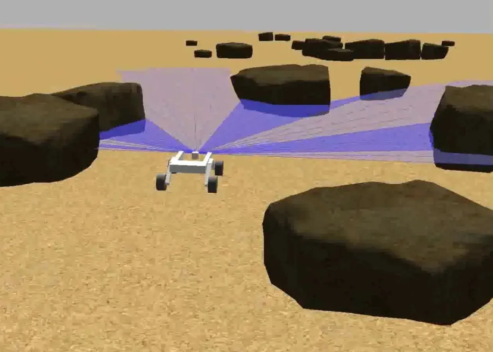

Rover Obstacle Avoidance
For a first year semester-long design course my team and I programmed a rover to navigate to a destination in a Gazebo simulation.
The simulated rover was equipped with GPS and a 2D LIDAR.
We considered several approaches to path planning and chose a potential feilds algorithm becuase it is simple and works well when obstacles are sparse.
I had a significant role in implementing the algorithm and setting up the Gazebo simulation for this projecct.